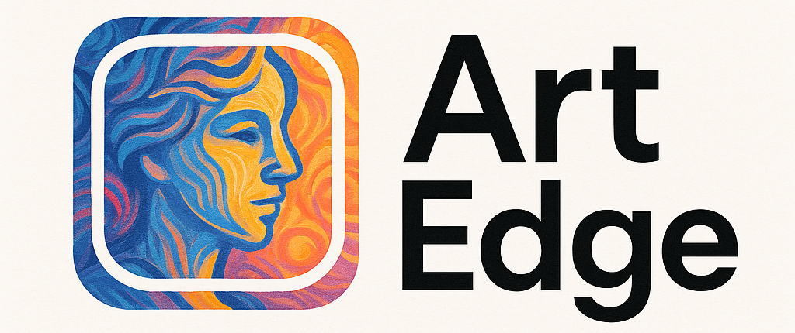
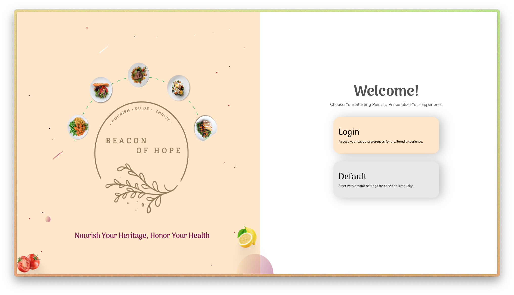

Completed · Edge AI
ArtEdge: Real-Time Neural Style Transfer for Mobile Devices
A mobile-first iOS app demonstrating on-device neural style transfer using edge computing principles and hardware acceleration.
AI Researcher · M.S. Computer Science @ University of South Carolina
I'm a computer science researcher and lifelong learner at the University of South Carolina, where I'm pursuing an M.S. in Computer Science with an AI concentration after completing my B.S. in Computer Science with minors in Mathematics and Data Science.
My work bridges Neuro-symbolic AI, natural language processing, explainable AI, planning, knowledge graphs, and multimodal GenAI evaluation to create transparent systems that solve real-world problems.
Paper on learning transition models for generalized planning accepted at ICAPS 2026.
Two GAICo papers accepted for IAAI/AAAI 2026 and AAAI Demo 2026 in Singapore.
Started M.S. in Computer Science at the University of South Carolina with an AI concentration.
Paper on learning transition models for generalized planning accepted at ICAPS 2026.
Two GAICo papers accepted for IAAI/AAAI 2026 and AAAI Demo 2026 in Singapore.
Started M.S. in Computer Science at the University of South Carolina with an AI concentration.
N. Gupta, V. Pallagani, J. A. Aydin, B. Srivastava
N. Gupta, P. Koppisetti, K. Lakkaraju, B. Srivastava
B. Muppasani, N. Gupta, V. Pallagani, B. Srivastava, R. Mutharaju, M. N. Huhns, V. Narayanan
For a complete publication profile, visit Google Scholar.
AIISC, University of South Carolina · Columbia, SC
Leading research in Neuro-symbolic AI and NLP across planning, knowledge graphs, and multimodal systems under Dr. Biplav Srivastava. Organized Safe AI for Seniors, mentored students, peer-reviewed 10+ papers, and contributed to 4+ peer-reviewed publications.
Trew Friends, University of South Carolina · Columbia, SC
Promoted organ, eye, and tissue donation through community outreach, helping persuade 300+ individuals to register as donors.
AIISC, University of South Carolina · Columbia, SC
Developed a planning ontology and LLM framework for transparent plan explanations, analyzed traffic data for SCDHEC/SCDPS/NSCSC, and presented at the 2024 Summer Research Symposium.
For a complete experience history, visit LinkedIn.

A mobile-first iOS app demonstrating on-device neural style transfer using edge computing principles and hardware acceleration.

A meal plan recommender that uses machine learning to tailor nutrition recommendations and provide interactive visual comparisons.
A RAG-based chatbot for the University of South Carolina, designed to help students, faculty, and staff find campus information and resources.
A segmentation-guided neural style transfer system that combines AdaIN with the Segment Anything model for localized artistic control.
For a complete project list, visit GitHub.